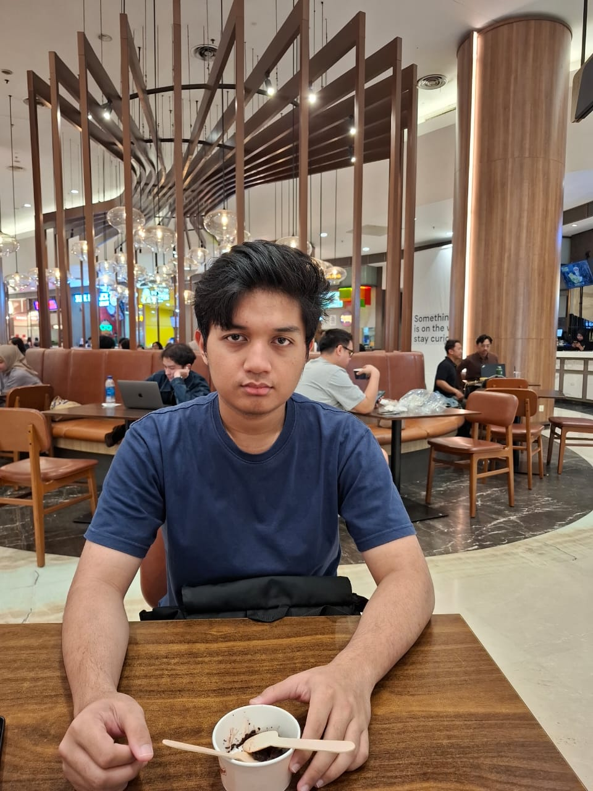

2025 — sekarang
S1 Teknik Informatika
Universitas Syarif Hidayatullah Jakarta (UIN Jakarta)
Estimasi lulus 2029Informatics / Software Engineering Intern
Mahasiswa S1 Teknik Informatika yang memiliki minat tinggi pada bidang informatika dan ingin membangun karier di bidang teknologi.

PROFILE / 0101 / Tentang
Saya adalah mahasiswa Teknik Informatika yang mempunyai minat tinggi ke bidang informatika dan ingin mempunyai karier di bidang Informatika.
Saat ini saya sedang memperkuat fondasi pemrograman melalui proyek-proyek kecil berbasis Java. Portfolio ini menjadi ruang untuk mendokumentasikan proses belajar dan karya yang terus berkembang.
Terbuka untuk kesempatan belajar dan berkontribusi sebagai intern.
02 / Pendidikan
Learning journey2025 — sekarang
Universitas Syarif Hidayatullah Jakarta (UIN Jakarta)
Estimasi lulus 20292021 — 2024
Pendidikan menengah atas
2018 — 2021
Pendidikan menengah pertama
2012 — 2018
Pendidikan dasar
03 / Proyek akademik
Java dasar · console basedEksplorasi pemrograman Java dasar melalui proyek-proyek console based.
Proyek kecil Java dasar berbasis console untuk mengeksplorasi perhitungan.
Java dasarPermainan tebak angka sebagai latihan pemrograman Java dasar berbasis console.
Java dasarProyek kecil pengelolaan akun bank menggunakan Java dasar berbasis console.
Java dasarDetail proyek, screenshot, dan source code dapat ditambahkan di kemudian hari.
04 / Kemampuan
Growing toolkit05 / Kontak
Untuk kesempatan magang, kolaborasi, atau sekadar berkenalan.